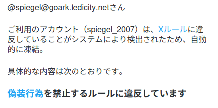
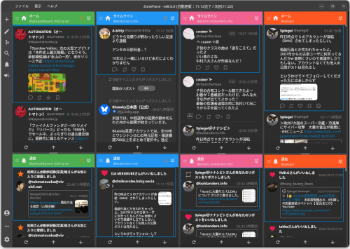

四方山話（2026-11-04 の戯れ言）

ブログネタが溜まってるが，いずれも小ネタばかりなので，今回まとめて放出する。
お名前 ID の削除
GMO の一連はセキュリティ・インシデントが云々というよりも「企業として大丈夫そう？」なレベルでツッコミどころ満載だが，私個人としては「対岸の火事」のつもりだった…
Mastodon とかの TL でドメインやレンタルサーバの移管・移転のポストを眺めていて「あれ？ そういえば私 お名前.com にアカウントがなかったっけ？」と思い出した。 随分前にドメインを取得したことがあるんだけど，上手く活用できず，継続せずに解約したんだった。
というわけで お名前.com のアカウントも削除することにした。
削除自体は問題なく終了。
削除の Web ページはレスポンシブじゃないので，スマホだと見づらい。 横着せずパソコンのブラウザで行うことをオススメする。 あと VPN 越しにアクセスすると Cloudflare がアクセスをブロックするみたいなのでご注意を。 なんか最近 Cloudflare にアクセスをブロックされることが増えた気がする。 めっちゃ面倒。
アカウントを作ったのは本当に随分前でカード情報も期限切れだった気がするので，情報が漏れててもそれほどインパクトはないと思う（希望的観測）。
君子危うきに近寄らず，である。
𝕏 アカウントを BAN された
先日 𝕏 に人間と認められなかった話を書いたが，昨日付けで BAN されたようだ。


2007年からの古参ユーザに偽装行為とか何言ってんだか（笑）
あれ以来，サインインしなくても全く困らないことに気付いた（他人の公開ポストはアカウントなしでも見れる）。 決済情報も入れてない。 異議申し立てとか面倒くさいし，老兵は消え去るのみである。
概ね20年か。 長いお付き合いでした。
ぞーぺんが mixi2 に対応した！
これも先日の話だが，マルチ SNS クライアント ZonePane (ぞーぺん) が mixi2 に対応した。 マルチカラムで表示させるとこんな感じにできる。


今まで mixi2 は，アカウントは取ったものの放置プレイ状態だったのだが，ぞーぺんが対応してくれたおかげで最近は TL をチェックしたり短文ポストを投げるようになった。 ありがたや 🙇
@spiegel です。興味のある方はどうぞ。
ところで Bluesky 上に「#さいきんのBlueskyってどうよ」というハッシュタグがあって，私も少し書いた。
Mastodon や Bluesky が Twitter/X の「出口」となっていた季節はとうの昔に終わっているが，だからといって Bluesky が覇権を取る必要は全くない。というのが最近の感想である。
こう考えるようになったのは #ぞーぺん を使うようになってから。
個人的な感想として #ぞーぺん の重要な機能は主に2つ。
- アプリ内で複数のサービスを横断的に閲覧・投稿できること（ただし X を除く）
- タイムラインを過去→現在の方向にスクロールアップして見れること
である。特にスクロールアップで TL を見ることで「作業の終わり」が明確になるので，安心してサービスから離れることができる。これ，本当に重要。
ぞーぺんを通してサービス（群）を見ることで Bluesky も one of them に過ぎないし，それでいいと思うようになった。自分が居心地がいいと思える場所に行けばいいのである。X も含めて
あとは Danah Boyd さんの parasocial の考え方か。やっぱ TL 型のメディアは social じゃないよね，と確信を抱くようになった。
というか social media なプラットフォームが欲しいなら Discord みたいなほうがいんじゃね？ まぁ，あれはあれで昨今の政治情勢の煽りで面倒くさくなってるけど，私は Discord に決済情報は入れてないし年齢確認処理も行ってない。それでも大きな問題はない。
Bluesky というか Atmosphere の強みは “Everything Account” なので，その意味でも Bluesky は one of them に過ぎない，と言える
やっぱ「サービスを横断できる」ってのは重要だと思うのよ。 Web なんだから。 旧 Twitter や Facebook など黎明期の SNS が Web 特性を殺してユーザや情報を囲い込んでしまった（そしてユーザがそれをよしとしてしまった）のは重大な失敗だった，と今更ながら思う。
Foursquare Placemaker Tools
しばらく前から Foursquare Placemaker Tools の案内が来るようになった。 アプリの Swarm は今のスマホには入れてなくて Foursquare がどうなってるのか全く知らなかったのだが，2024年末に一般ユーザ向けの City Guide が終了していたようだ。
さらに今年9月にデータブローカーの Infillion が Foursquare を買収するとのニュースがあった。
Infillion 社はこんな感じの会社らしい1。
Infillion is the first fully composable advertising platform, built to reduce complexity, waste, and opacity in digital media. Formed by unifying category-defining technologies including MediaMath, TrueX, Gimbal, Drawbridge, and Catalina, Infillion connects demand, supply, data, and creative in a single platform with the transparency of the open web and the scale of walled gardens. Powered by deterministic purchase intelligence and agentic-ready infrastructure, Infillion supports managed service, self-service, and automated execution for media buyers, sellers, agencies, retailers, and enterprise clients.
んー。 そのせいで Placemaker Tools への案内メールが増えたのかねぇ。
買収話は気になるところではあるが， Swarm は再開してもいいかもなぁ。 Placemaker Tools はどうするか…
主権 AI
起点は，先月のこの記事から。
- ‘You want to control your own AI’: Pegasus spyware founder tells governments to push for sovereign AI and national security over reliance on US AI
- 「自分たちのAIは自分たちで管理すべき」――Pegasus開発元の創業者、各国政府にソブリンAIの推進を促す
Pegasus は NSO Group が政府機関向けに販売していたスマートフォン用のスパイウェアで2，著者の Shalev Hulio 氏は NSO の共同創業者で CEO も務めていた。 現在の彼は NSO 離脱後 Dream を立ち上げ CEO におさまっている。
Unlike NSO, which licensed its Pegasus software to sovereign states and law enforcement to fight terrorism and serious crime, Dream focuses on protecting governments and critical infrastructure - such as water, oil and gas facilities - from cyber attacks. It unveiled its sovereign AI platform Atlas on Wednesday.
それで最初の記事に戻るわけやね。 なんとなく「お前がゆーな！」って気分なんだけど，深くはツッコむまい。 広告記事というのはこういうものだし。
ここのところ「デジタル主権」とか「AI 主権」とかいった話が頻繁に聞こえてきて姦しい。 EFF も昨今の情勢に警告を発しているようだ。
- 「デジタル主権」とは何か、それは何をもたらしうるのか » p2ptk[.]org
- デジタル主権の要諦は「AI振興」でも「AIデータセンターを立てまくる」ことでもない » p2ptk[.]org
- AI規制は報復的であってはならないし、AI企業の誇大広告に踊らされてもいけない » p2ptk[.]org
Cory Doctorow 氏もいつもの調子でぼやいてるな（笑）
一方で OpenAI の CEO は「個人 PC のメモリは無駄」とか日本の土地バブル時代の地上げ屋みたいなことを言ってるし。
最近は，かなりマジで
と思っている。
参考

- もうすぐ絶滅するという開かれたウェブについて 続・情報共有の未来
- yomoyomo (著)
- 達人出版会 2017-12-25 (Release 2019-03-02)
- デジタル書籍
- infoshare2 (tatsu-zine.com)
- 評価
[Comment] WirelessWire News 連載の書籍化。感想はこちら。祝 Kindle 化！
reviewed by Spiegel on 2018-12-31

- THIS IS FOR EVERYONE(ディス イズ フォー エブリワン) | 東洋経済STORE
- 東洋経済新報社が発行する週刊東洋経済、会社四季報などの雑誌や本、統計・総覧、主催のセミナー・イベント情報をご案内しています。
- Release 2026-10-14
- 評価
[Comment] World Wide Web に関する Tim Berners-Lee の回顧録。 AI に関する言及もある。
Powered by linkcard
-
カリフォルニア州プライバシー保護機関（CPPA）は，2024年に Infillion がデータブローカーとしての登録と年会費の支払いを怠ったとして，54,200ドルの支払いと是正措置に合意したと報じている。 ↩︎
-
Pegasus は，端末に侵入すれば持ち主が知らないうちに生活や通信を広く覗ける強力な監視ツールとして機能する。実際にアラブ首長国連邦の人権活動家が標的になったり WhatsApp のユーザに大規模な攻撃を仕掛けた事例がある。 WhatsApp の件については2025年に NSO に対して損害賠償を命じる陪審評決が出ている。最初に立ち上げた NSO もその後に立ち上げた Dream もイスラエル発のサイバー企業である。 ↩︎